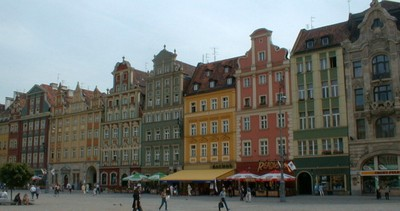

Masonry, unknown reinforcement [M99]
It is clear that the structural material is masonry, but the type of reinforcement is unknown. The reinforcing may be hidden, or information about it is unavailable.

These buildings in Lisbon, Portugal are likely of masonry construction, but it is not known whether reinforcement was provided (note exterior walls covered by glazed ceramic tiles typical of Portugal) (S. Brzev)

These buildings in Vroclaw, Poland are likely of masonry construction, but it is not known whether reinforcement was provided (C. Scawthorn)